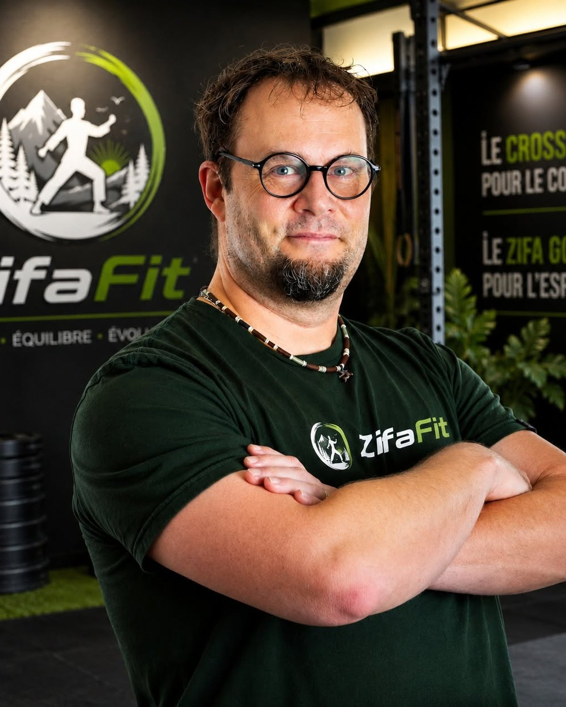

Le mouvement.
Le calme.
Une même intention.
Un projet qui explore la rencontre entre l’entraînement fonctionnel et le Zifa Gong, dans un univers inspiré par la nature.
Découvrir le conceptZifa Fit
Le volet consacré au mouvement et à l’organisation de l’entraînement. Les supports de pratique sont en développement et ne sont pas diffusés ici.
Le projet FondationZifa Gong
Le volet consacré à la lenteur, à l’attention et à la place du calme dans cette démarche personnelle.
L’intention du Zifa Gong
À l’origine du projetJocelyn Bérubé
Après 25 années de service dans les Forces armées canadiennes, mon intérêt pour le mouvement et ma pratique personnelle du Zifa Gong m’ont donné envie de réunir ces deux univers.
Je partage ici une idée en développement, sans me présenter comme entraîneur personnel certifié ni professionnel de la santé.
Comprendre la démarcheContenu de pratique non disponible
Les séances, vidéos guidées et cartes détaillées ne sont pas accessibles sur ce site. Aucune date de lancement n’est annoncée.
Une question sur le projet ?
Vous pouvez écrire à zifafit@outlook.com pour une question générale. Aucun conseil d’entraînement personnalisé n’est fourni. Merci de ne pas transmettre de renseignements médicaux.